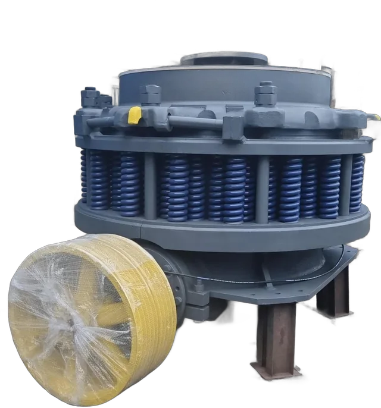
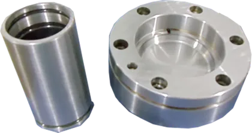
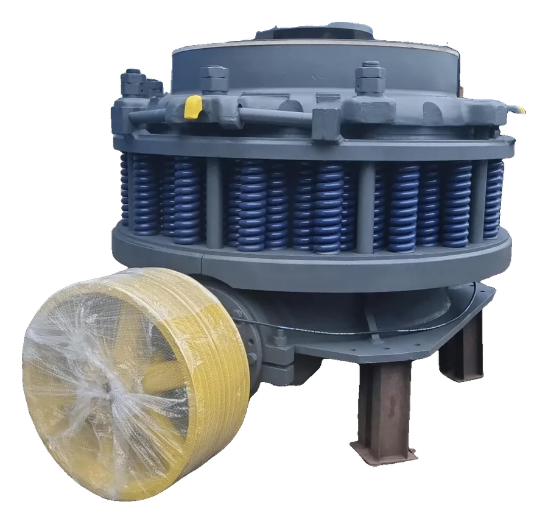
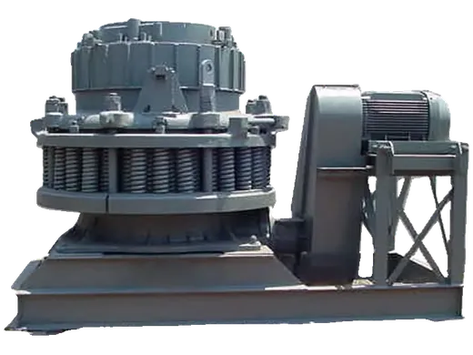
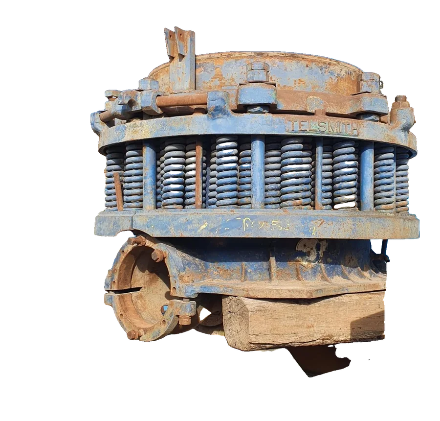
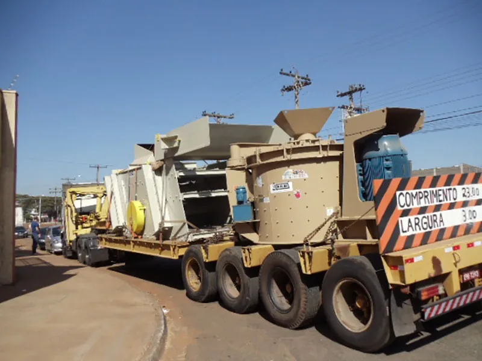

Eixos
Eixo excêntrico do BG-36
BG-36
Santa Bárbara d'Oeste/SP · desde 2000
A WRM fabrica, recupera e usina peças para britadores de mandíbula e girosféricos. Também usinamos sob desenho para outras indústrias.

Serviços

Eixos, pinhões, buchas, rolamentos, molas e fixação para as linhas de mandíbula e girosférica.
Ver catálogo
Fabricação a partir do seu desenho, de uma amostra ou da peça gasta.
Ver peças usinadas
Revisão de britadores, troca e recuperação de componentes, com montagem e testes na nossa oficina.
Ver antes e depois
Britadores de mandíbula e girosféricos que passaram pela WRM.
Ver equipamentosCompatibilidade
Escolha o modelo para ver as peças do catálogo. Se o seu não está na lista, mande a placa do equipamento que a gente verifica.
Barber Greene e Telsmith são marcas de seus respectivos fabricantes. A WRM fabrica e recupera peças compatíveis com esses equipamentos.
Catálogo
Eixos
BG-36
Transmissão
BG-48
Rolamentos
10E18Girosférico
Buchas e anéis
BG-36
Eixos
Girosférico
Transmissão
Molas
95G88B95G89B95G90BGirosférico
Fixação
BG-36FCBG-36
Manutenção industrial
Peças novas ou recuperadas a partir do desenho técnico, de uma amostra ou da própria peça gasta. Atendemos mineração e indústria em geral.
Fig. 01Corpo roscado em bronze
Fig. 02Hastes com revestimento e rosca
Fig. 03Barra furada
Fig. 04Base usinada
Fig. 05Blocos com alça
Fig. 06Camisas em aço
Fig. 07Fusos em base
Fig. 08Suporte em chapa
Fig. 09Conjunto de fixação
Fig. 10Parafusos de cabeça sextavada
Fig. 11Carcaça recuperada
Fig. 12Bucha e flange
Fig. 13Eixos escalonados
Fig. 14Luva com anéis
Fig. 15Tubo flangeado
Fig. 16Bloco usinado
Equipamentos
Revisão, reforma e montagem de britadores de mandíbula e girosféricos. Tem um equipamento parado? Mande fotos e a placa para avaliação.
Girosférico
Girosférico
Cônico hidráulico
Mandíbula
Mandíbula
Mandíbula
Girosférico
Mandíbula
Girosférico
Girosférico
Mandíbula
Reforma
Britador girosférico Telsmith desmontado, recuperado peça por peça e entregue pronto para operar. Arraste para comparar.

01Carcaça
Limpeza, inspeção e pintura de fundo da carcaça principal.
02Usinagem
Recuperação de componentes no torno, na medida original.
03Eixo principal
Eixo novo usinado, pronto para receber as buchas de bronze.
04Anel de ajuste
Rosca recuperada e anel pintado, pronto para a montagem.
05Lubrificação
Tanque de óleo fabricado sob medida para o conjunto.
06Montagem
Britador, bojo e unidade de lubrificação montados para teste.
Orçamento
Modelo do britador, nome ou código da peça, desenho técnico ou fotos da peça gasta com medidas.
Analisamos o pedido e respondemos com valor e prazo de fabricação pelo WhatsApp ou e-mail.
A peça é produzida na nossa oficina em Santa Bárbara d'Oeste e segue para retirada ou envio.
Empresa
A WRM Indústria e Comércio de Equipamentos fabrica e recupera peças para britadores da linha Barber Greene e faz a manutenção desses equipamentos para pedreiras e mineradoras.
Com o mesmo parque de usinagem, atende sob encomenda empresas de outros setores que precisam de peças fora de linha ou de reposição rápida.

Contato
Preencha o que souber. A mensagem abre pronta no WhatsApp de vendas.